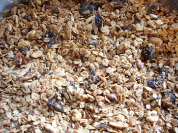
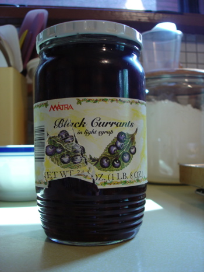

Maple granola, and spring cleaning
Every time I make granola, which isn’t often, only about once every five years, it is so delicious and so easy that I vow that I will never buy it again. Today I wanted to make a dent in an enormous box of oatmeal, thinking that my husband won’t be eating too much hot cereal in the summer and soon my kitchen is going to be torn apart, and by the time the contractor is finished the weather will be well and truly hot—too hot for baking oatmeal cookies.

King Arthur Flour sent their newsletter out a couple of days ago, with this recipe in it—Maple Granola. I had all the ingredients in the freezer, cupboards, and refrigerator, including a lot of things I wanted to use up besides the oatmeal. I know I packed the jar of sunflower seeds when we moved into this house, and they weren’t really fresh then (that was 7 years ago) and I think I can say the same for the wheat germ. I took a bold step, and when I measured out what I needed of the sunflower seeds I threw the rest away! Fortunately I was able to finish the wheat germ and didn’t have to make that painful decision a second time.
Now I’m not blaming my mother for the way I am, after all, she wasn’t born until 1932, so didn’t really experience the Depression, but certainly I can hear her voice in my head saying, “We don’t waste food in this house, young lady!” I have progressed to the point where I won’t serve food to my family if I suspect that there’s a chance that it might actually make them sick, and I certainly throw something away immediately if I see signs of insect infestation (well, unless it’s not that bad and I really need it for dinner that night but don’t tell my kids), but there’s no question that I keep lots of products in the fridge, freezer, and pantry well past their sell-by date. And it may not be my mother’s fault, but I come by it honestly. I was looking for a spice in her kitchen last year and I said to her, “You know, Mom, they display spices exactly like some of the ones you have in the kitchen at Henry Clay Frick’s restored mansion.” So I’m thinking her mother gave some of them to her when she got married and they weren’t new then! You know, some of those you don’t use too often, like mace, chervil, maybe ground sage, in some absolutely antique spice cans that she could probably sell on e-Bay for a lot of money (unless they’re full of bugs).
With these sunflower seeds, I have found myself in the position the past couple of years of wanting to put sunflower seeds in our salad because my husband really likes them, but not wanting to use the ones I had, knowing how rancid and stale they would taste, yet not wanting to buy fresh ones because I had an almost full quart jar of them! I feel so free now, and I can buy some fresh seeds, albeit in a smaller quantity.

I’m sitting here in the kitchen writing this because the granola has to be stirred every 20 minutes; it smells divine. I used some dark maple syrup that I brought back from Canada last summer and opened for the first time today; I got it expressly for baking and cooking. I’m also wondering what else on my shelves should be 86ed—the jar of black currants in light syrup I bought at a store called Reading China and Glass that is so old the store has been closed for at least 10 years surely can’t be good any more. I got them thinking they would taste great dumped on top of a pork roast prior to putting in the oven but somehow never got around to it…
Comments
Maple granola looks good. I haven’t thought about making granola for ages but I recently saw a recipe in the Gourmet Cookbook and was thinking I might give it a try.
I did a big clearing out of my spices last summer and I know some of them were more than ten years old. And every so often I am startled when I look at the pull date on some condiment and realize it’s gone past its pull date which would mean it’s been sitting in the fridge door for years.
Mom, I can really identify with the really old stuff in the freezer thing you recently went through. Back in 2000 when Mom and Dad both became too ill to stay in their house, and I of the three sons was elected to go to Minnesota to move them out and sell the house, I found bags and cottage cheese containers filled with nuts, seeds, etc., from many, many years previous. I opened most of them up and they all had that not-quite-spoiled smell, but distinctly reeked of freezer. So, like you, I just chucked all of it. They had indeed gone through the Depression and would not throw anything out, including drawers full of plastic produce bags and enough twisty ties to last a lifetime. Anyway, you have a cute writing style and I enjoyed coming across it tonight.
Hi Rebecca,
Wonderful granola! Like you I make it so rarely but when I do I enjoy it so much.
As good as some commercial granolas are, home made is the best.
Great recipe!
I know what you mean about the condiments, Julie; when my oldest son dropped by for a sandwich recently he stopped me as I was about to put 5-year old mayonnaise on the bread.
Ivonne, Julie—gourmet granola is so expensive, I’m thinking of maybe giving it for Christmas this year in decorative containers or jars as an alternative to cookies or candy. I really like this maple granola recipe I used and it would be pretty with cranberries and shelled pistachios in it.
Harry, your comment reminded me of when our family visited my father’s Aunt Helen when my siblings and I were little. She was like your parents and never threw a thing away; she fed us from the freezer out of unmarked packages of tiny quantities of leftovers—there were even little bits of scrambled eggs in there! I’m sure my mother had to do a lot of under-the-table arm squeezing to keep my brother and sister and me from outright rebellion. Of course, children had better manners back then. I feel sorry for whoever had to go through her house when she died!
Yuk, Yuk, Yuk. 1932 was the beginning of the depression, and we saw many people scrapping by until the 2nd world war began. Guess I’ll try and clean out cupboards and freezer before you visit again! Good idea about Granola for Xmas gifts! Love ’ya
Add a comment